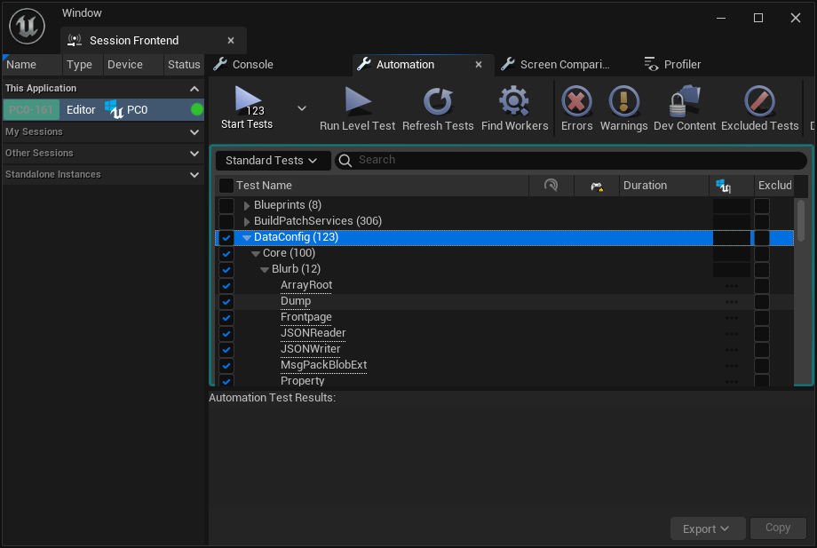

Automation
One thing we find that's really important when maintaining DataConfig across multiple UE versions, is that proper automation is a must. On this page we document how to run the bundled automation tests.
Note that all instructions shown here are using Windows with a Cmd shell. You'll need to adapt to your system setup.
DataConfigHeadless
We provide a standalone, command target that runs tests on core, non editor DataConfig features. This requires a source build to work, that means downloaded dists from Epic Launcher can not build this target.
-
Get a copy of Unreal Engine source code. Also checkout DataConfig supported UE versions.
-
Run
./GenerateProjectFiles.batunder Unreal Engine root. Note that you don't need to build the editor. This step would buildUnrealBuildToolwhich is enough for the headless target to work. -
Get a copy of DataConfig repository. At the folder where
DataConfig.upluginandDataConfig4.upluginresides:# UE5 <PathToUE5SourceBuild>/Engine/Build/BatchFiles/RunUBT -project="%CD%/DataConfig.uplugin" DataConfigHeadless Win64 Debug # UE4 <PathToUE4SourceBuild>/Engine/Binaries/DotNET/UnrealBuildTool.exe -project="%CD%/DataConfig4.uplugin" DataConfigHeadless Win64 DebugNote how UE4/5 uses
DataConfig4.uplugin/DataConfig.upluginrespectively. -
Run the headless target binary:
%CD%/Binaries/Win64/DataConfigHeadless-Win64-Debug.exeA success run looks like this:
LogDataConfigCore: Display: UE Version: 5.1.0, DataConfigCore Version: 1.4.0, 10400 LogDataConfigCore: Display: Filters: DataConfig. - OK | DataConfig.Core.Property.StackScalarRoots - OK | DataConfig.Extra.SerDe.Base64 ....... - OK | DataConfig.Extra.InlineStructUsage - OK | DataConfig.Core.Property.Primitive1 Run: 122, Success: 122, Fail: 0
Running the benchmarks
DataConfigHeadless accepts command line arguments as filters. The benchmarks runs slower are skipped by default.
You can build and run the benchmarks with the commands below:
# remember to build in Shipping
<PathToUE5SourceBuild>Engine/Build/BatchFiles/RunUBT -project="%CD%/DataConfig.uplugin" DataConfigHeadless Win64 Shipping
%CD%/Binaries/Win64/DataConfigHeadless-Win64-Shipping.exe DataConfigBenchmark
Build and run Linux target with WSL2
UE officially support cross compiling for linux and distribute toolchains on its website. Here we demonstrate how to build the headless target for Linux and run it under WSL2.
-
Setup WSL2 following this guide. You should get the latest LTS Ubuntu. Run
wsl lsb_release -irto validate it's working.> wsl lsb_release -ir Distributor ID: Ubuntu Release: 22.04 -
Install UE cross compile toolchain. Grab the installer and install on your machine.
Note that each UE version matches a different toolchain. You can download and install multiple toolchains and select which to use at build time through environment variable.
-
Build the headless target for Linux.
# UE5.1 set LINUX_MULTIARCH_ROOT=<PathToToolchains>/v20_clang-13.0.1-centos7 <PathToUE5SourceBuild>/Engine/Build/BatchFiles/RunUBT -project="%CD%/DataConfig.uplugin" DataConfigHeadless Linux Debug # UE4 set LINUX_MULTIARCH_ROOT=<PathToToolchains>/v19_clang-11.0.1-centos7 <PathToUE4SourceBuild>/Engine/Binaries/DotNET/UnrealBuildTool.exe -project="%CD%/DataConfig4.uplugin" DataConfigHeadless Linux Debug -
Run the headless target through WSL.
wsl ./Binaries/Linux/DataConfigHeadless-Linux-DebugA success run looks like this:
Using Mimalloc. LogInit: Build: ++UE5+Release-5.1-CL-0 LogInit: Engine Version: 5.1.0-0+++UE5+Release-5.1 LogInit: Compatible Engine Version: 5.1.0-0+++UE5+Release-5.1 LogInit: OS: Ubuntu 22.04.1 LTS (5.10.102.1-microsoft-standard-WSL2) ....... LogDataConfigCore: Display: UE Version: 5.1.0, DataConfigCore Version: 1.4.0, 10400 LogDataConfigCore: Display: Filters: DataConfig. - OK | DataConfig.Core.MsgPack.TestSuite - OK | DataConfig.Core.Property.Blob2 ....... - OK | DataConfig.Core.Serialize.ObjectRef - OK | DataConfig.Core.MsgPack.Extension Run: 122, Success: 122, Fail: 0 LogCore: Engine exit requested (reason: DataConfigHeadless Main Exit) LogExit: Preparing to exit. LogExit: Object subsystem successfully closed. LogExit: Exiting.
DcCoreTestsCommandlet
DataConfigHeadless is a Program target that does not depend on Engine and UnrealEd module. It get faster compile and iteration time, but losing functionality to touch any gameplay and editor code.
With the editor target we have a DcCoreTestsCommandlet that can be run through the commandline editor target. On top of that this works with pre-built editor downloaded from Epic Launcher.
-
Integrate DataConfig plugin into your project. You can also find a clean project bundled at
Misc/Project. -
Build the editor target. You can do it in Visual Studio or with commands below:
# UE5 # build <PathToUE5>/Engine/Build/BatchFiles/RunUBT DcProjectEditor Win64 Development %CD%/DcProject5.uproject -NoHotReload -NoEngineChanges # run commandlet <PathToUE5>/Engine/Binaries/Win64/UnrealEditor-Cmd.exe %CD%/DcProject5.uproject DataConfigEditorExtra.DcCoreTestsCommandlet # UE4 # build <PathToUE4>/Engine/Binaries/DotNET/UnrealBuildTool.exe DcProjectEditor Win64 Development %CD%/DcProject4.uproject -NoHotReload -NoEngineChanges # run commandlet <PathToUE4>/Engine/Binaries/Win64/UE4Editor-Cmd.exe %CD%/DcProject4.uproject DataConfigEditorExtra.DcCoreTestsCommandletA success run looks like this:
[2022.10.25-14.33.52:893][ 0]LogTextureFormatETC2: Display: ETC2 Texture loading DLL: TextureConverter.dll [2022.10.25-14.33.52:903][ 0]LogTargetPlatformManager: Display: Loaded TargetPlatform 'Android' [2022.10.25-14.33.52:903][ 0]LogTargetPlatformManager: Display: Loaded TargetPlatform 'Android_ASTC' [2022.10.25-14.33.52:903][ 0]LogTargetPlatformManager: Display: Loaded TargetPlatform 'Android_DXT' ....... [2022.10.25-14.39.30:999][ 0]LogDataConfigCore: Display: Filters: DataConfig. - OK | DataConfig.Core.RoundTrip.MsgPack_Persistent_StringSoftLazy - OK | DataConfig.EditorExtra.GameplayEffect ....... - OK | DataConfig.Core.Property.PropertyBuilder3 - OK | DataConfig.EditorExtra.BPObjectInstance Run: 129, Success: 129, Fail: 0
Running automation in the editor
Lastly you can run and debug automation tests from the editor.
It's the most conventional way to run automation and is well supported in DataConfig.
